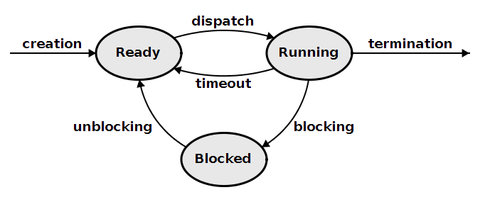
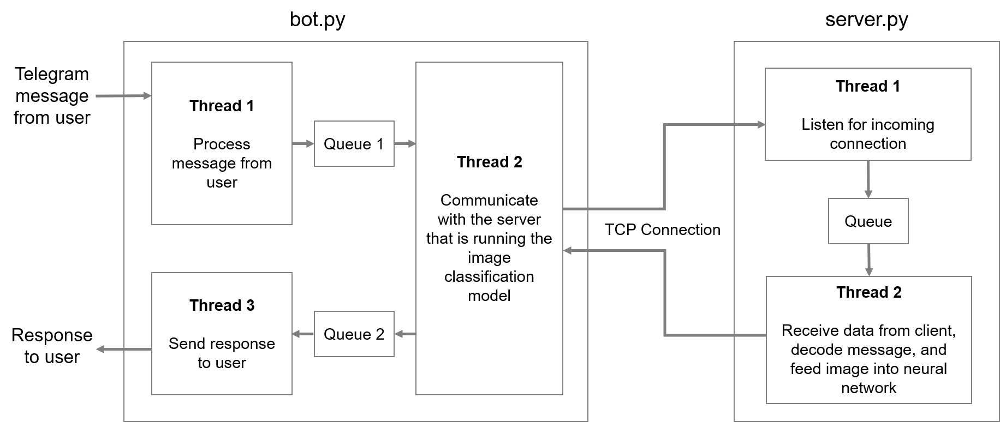
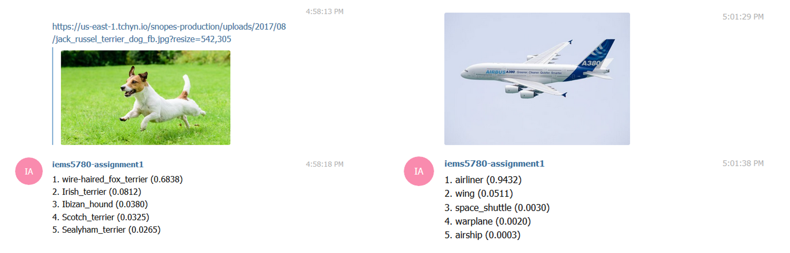

class: center, middle # IEMS 5780<br/>Building and Deploying Scalable<br/>Machine Learning Services ### Lecture 8 - Concurrent Programming (I) #### Albert Au Yeung<br/>25th October, 2019 --- # Agenda - What is concurrent programming? - Python's characteristics - Multi-threading - Multi-processing - Message passing and shared memory - Application in socket programming --- class: center, middle # Concurrent Programming --- class: split # Concurrent Programming .column-left[ - Simple programs are usually **sequentially** executed - **Concurrent**: *Existing or occurring at the same period of time* - Why do we want to do things at the same time?<br/>**To save time!** 1. Our processor is very powerful (multi-core processors) 2. Some tasks would take a relative long time to finish: - Disk I/O - Network calls - User input ] .column-right[ <center> </center> ] --- # Moore's Law <center> </center> --- # Concurrent Programming - **In the past** - Parallel computing has been mainly used in very advanced technical computation (high performance computing) - Concurrent programming is mainly used on the operating system level - Normal programs are mostly sequential (CPUs would get faster and faster anyway) - **Nowadays** - CPUs get faster *more slowly* - A program will be slow if not keeping concurrency in mind - The rise of Internet applications with millions of concurreny users make it even more necessary --- # Concurrent Programming ### Benefits of concurrent programming 1. **Abstraction**:<br/>we would like to separate different tasks which can be executed independently 2. **Performance**:<br/>speed up a process by distributing sub-tasks to different processors/cores available on the machine 3. **Responsiveness**:<br/>user interface can remain responsive to the user (either taking further user input or showing a constant update of the progress to the user) --- # Concurrency vs. Parallelism * In many cases, [concurrency](https://en.wikipedia.org/wiki/Concurrency_%28computer_science%29) and [parallel computing](https://en.wikipedia.org/wiki/Parallel_computing) are used exchangeably. However, they are conceptually different. 1. **<span style="color: rgb(79, 95, 182)">Concurrency</span>** - The ability of different executing units in a program to be executed out-of-order or in partial order without affecting the final outcome - It mainly concerns how a program is **designed** and **structured** - It does not necessarily mean that things happen at the same time 2. **<span style="color: rgb(187, 99, 64)">Parallel Computing</span>** - The execution of processes or computations are carried out at the same time - It mainly concerns how can we execute a program **faster** - It usually refers to **physical** parallelism - Ref: [Yet another blog post about how parallelism is not concurrency](http://composition.al/blog/2014/11/24/yet-another-blog-post-about-how-parallelism-is-not-concurrency/) --- # Concurrent Programming ### Remember our TCP server program? ```python import socket server_socket = socket.socket(socket.AF_INET, socket.SOCK_STREAM) server_socket.bind((socket.gethostname(), 50001)) server_socket.listen(10) while True: (client_socket, address) = server_socket.accept() data = client_socket.recv(1024) client_socket.sendall(data) client_socket.close() ``` - It can only serve **one client** at a time - What if serving a client takes a long time? --- # Concurrent Programming - Concurrency can be achieved by several means: * **Multi-threading** * **Multi-processing** * Asynchronous / Event driven approach - We will focus on the first two in this lecture --- class: middle, center # Processes and Threads --- # Processes - A **process** is an independent unit of execution (a running program in your computer) - It has: - process identifier - memory space - Its execution is scheduled to be carried out by the operating system on the available processor(s) <center>  </center> --- # Threads - A **thread** is also called a **light-weighted process** - It is created within a process to carry out various sub-tasks - It has: - thread identifier - shared memory space in the process - its own memory space - Consider a **Web browser** (a process) - Different threads are used to handle loading of pages in different tabs - A thread is used to allow user to type in the address bar --- # Challenges in Multi-threading ### Consider the following example - Three variables initialized: `int x = y = z = 0` - In thread 1, we do: ```python z = x + y ``` - In thread 2, we do: ```python x = 2 y = 3 ``` - If we execute two threads in parallel, what are the final values of `x`, `y`, and `z`? --- # Concurrent Programming in Python ### Python provides a number of APIs for concurrent programming 1. `threading` - A module for working with threads in a standard way 2. `multiprocessing` - A module with similar API as the `threading` module but spawn processes instead of threads 3. `concurrent.futures` - Provides an even higher-level abstraction layer for asynchronous execution of threads or processes 4. Others (e.g. `subprocesses`, `gevent`, `greenlets`, `celery`, `asyncio`) --- # The Global Interpreter Lock - **Python** is famous for its **Global Interpreter Lock (GIL)** - At any time, only **one** native thread can be executed in one interpreter process, even when the machine has multiple processors - NOTE: GIL is a characteristic of the [CPython](https://github.com/python/cpython) implementation, not of Python itself - References: - [Global interpreter lock - Python.org](https://wiki.python.org/moin/GlobalInterpreterLock) - [Global interpreter lock - Wikipedia](https://en.wikipedia.org/wiki/Global_interpreter_lock) - Does it mean that we cannot benefit from multi-threading in Python? --- # The Global Interpreter Lock ### What does GIL mean for concurrent programming in Python - Only the thread that has acquired the **GIL** may operate on Python objects or call Python/C API functions - This generally means any operations that are **CPU-bound** - A Python program may still benefit from multiple threads running concurrently if your program: - is **I/O-bound** (often has to wait for user input, network I/O, etc.)<br/>(GIL is **released** on I/O operations) - uses some other libraries that would release the GIL when performing computation (e.g. numpy) --- class: middle, center # Threads in Python --- class: split # Threads in Python .column-left[ ```python from threading import Thread def print_hello(): """A function to be executed in a thread""" print("Hello!") # Create 5 threads threads = [] for i in range(5): t = Thread(target=print_hello) t.start() threads.append(t) # Wait until all threads are finished for t in threads: t.join() ``` ] .column-right[ Executing the script: ```python Hello! Hello! Hello! Hello! Hello! ``` - `.start()` will start the thread's activity (only call this at most **ONCE**) - `.join()` will be blocked until that thread has terminated. ] --- class: split # Threads in Python .column-left[ - You can pass arguments to the target function ```python from threading import Thread def print_hello(n): print("Hello from Thread {}!".format(n)) threads = [] for i in range(5): t = Thread(target=print_hello, args=(i,)) t.start() threads.append(t) ... ``` ] .column-right[ - Executing the script: ```python Hello! 0 Hello! 1 Hello! 2 Hello! 3 Hello! 4 ``` - Note that arguments must be in the order as defined in the function signature ] --- class: split # Daemonic and Non-daemonic Threads .column-left[ - Threads can either be **non-daemonic** (default) or **daemonic** (means running in the background) ```python from threading import Thread from time import sleep def print_hello(): sleep(0.2) print("Hello!") threads = [] for i in range(5): t = Thread(target=print_hello, daemon=True) t.start() # Nothing will be printed when program exits ``` ] .column-right[ - A program will wait until all **non-daemonic threads** have completed and terminated (even without explicitly calling `join()`) - If you want to avoid some threads from blocking the main program from exiting, use **daemonic** threads ] --- # Notes on Threads in Python - Once the `start()` function is called on a thread object, the target function will be executed in a new thread - Your program continues to execute other lines in the **main thread** - Call `join()` when you want to make sure that all threads have terminated - All threads (either daemonic or non-daemonic) will be terminated if the main program stops - It is **NOT guaranteed** that threads are executed in the order of calling the `start()` function --- class: split # Getting a list of all active threads .column-left[ ```python import time import threading from threading import Thread def print_hello(n): time.sleep(0.5) print("Hello from Thread %d!" % n) for i in range(5): t = Thread(target=print_hello, args=(i,)) t.start() main_thread = threading.main_thread() for t in threading.enumerate(): if t != main_thread: t.join() ``` ] .column-right[ - `threading.main_thread()` returns the main thread in the process - `threading.enumerate()` returns all threads that are currently active, including threads that have not yet started - You **CANNOT** join the main thread (raise `RuntimeError`) ] --- # More examples: Squares of all integers up to 100 ```python import time import threading from threading import Thread def print_squares(n): print(n * n) start_time = time.time() for i in range(100): Thread(target=print_squares, args=(i+1,)).start() for t in threading.enumerate(): if t != threading.main_thread(): t.join() print("Using threads:", time.time() - start_time) # print the time used ``` --- # More examples: Squares of all integers up to 100 - Do we have any **speed up**? - See an example run: ```bash ... 9604 9801 10000 multi-threading: 0.00979924201965332 ... 9604 9801 10000 Sequential: 0.001138925552368164 ``` - Using multi-threading is even **slower** in this case (Why?) --- # Another Example: Image Downloading ```python import threading import time from urllib import request images = [...] # A list of URLs to images def download(url, i): print("Downloading image {}...".format(i)) request.urlretrieve(url, "{}.jpg".format(i)) start_time = time.time() for i, url in enumerate(images): threading.Thread(target=download, args=(url, i)).start() for t in threading.enumerate(): if t != threading.main_thread(): t.join() print(time.time() - start_time) ``` --- # More examples - Do we have any speed up? ```bash Downloading image 0... Downloading image 1... Downloading image 2... Downloading image 3... Downloading image 4... Downloading image 5... multi-threading: 1.6151726245880127 ... Downloading image 0... Downloading image 1... Downloading image 2... Downloading image 3... Downloading image 4... Downloading image 5... Sequential: 4.215069532394409 ``` --- # When to Use Multi-theading? - If your program is <span style="color: #AA4455">**CPU-bound**</span>, using multi-threading will actually be **slower** - The GIL is almost never released by a thread - Need time to create a new thread (**overhead**)<br/><br/> - If your program is <span style="color: #4455AA">**I/O-bound**</span>, you may consider using multi-threading - A thread will release the GIL when it is waiting for I/O (e.g. image being downloaded from the network) - The longer your I/O operation is, the more you benefit from multi-threading<br/><br/> - You should also consider multi-threading if you don't want a particular task to **block** your program's flow --- class: split # Subclassing Thread .column-left[ - When you have more complex operations in a thread ```python from threading import Thread class SquareThread(Thread): def __init__(self, n): Thread.__init__(self) # important! self.n = n def run(self): # must implement this! print(self.n * self.n) for i in range(5): t = SquareThread(i) t.start() ``` ] .column-right[ - When subclassing `Thread`, your class should always have a `run()` method - Always call the **base class constructor** if you override the constructor - Operations in the `run()` method will be executed once the `start()` method is invoked ] --- # Shared Object between Threads - Sometimes it is necessary to **share some resources** among all threads - **Examples**: - A global counter which all threads will update - A dictionary tracking the number of times different values have appeared - The `threading` module provides the `Lock` class, which can be used to make sure that **only one thread is accessing an object at a time** - Consider the example of a **global counter** --- class: split # Using Lock .column-left[ ```python class Counter: def __init__(self): self.lock = threading.Lock() self.count = 0 def increment(self): self.lock.acquire() try: self.count += 1 finally: self.lock.release() def add_two(counter): for i in range(2): counter.increment() counter = Counter() for i in range(5): Thread(target=add_two, args=(counter,)).start() ``` ] .column-right[ - We create a custom class called `Counter` - Whenever `increment` is invoked, we first try to `acquire` the lock - `acquire` will be blocked if another thread has acquired the lock before, until that thread `release` the lock ] --- # Using Lock - The previous example can be simplified using the `with` statement ```python class Counter: def __init__(self): self.lock = threading.Lock() self.count = 0 def increment(self): with self.lock: self.count += 1 def add_two(counter): for i in range(2): counter.increment() counter = Counter() for i in range(5): Thread(target=add_two, args=(counter,)).start() ... ``` --- # Getting output from threads - Using a `Queue`, you can transfer data from one thread to another (Ref: [Queue](https://docs.python.org/3/library/queue.html)) ```python from threading import Thread from queue import Queue def square(n, queue): queue.put(n * n) # Pass a queue as an argument to each thread output_queue = Queue() for i in range(10): Thread(target=square, args=(i, output_queue)).start() ... # join the threads # Retrieve the results from the queue while not output_queue.empty(): print(output_queue.get()) ``` --- # Using Queue * The `Queue` class provide a **thread-safe** mechanism to exchange data between threads * Can we re-write the **Counter** example by using `Queue` and an additional thread to collect all the counts? --- # Multi-threading and Locks - We mentioned that we should use a **lock** when allowing multiple threads to access shared objects - In fact, whether an operation is on an object is **thread-safe** depends on whether it is an **atomic** operation in the **bytecode** level - Even though there is the GIL in Python, it does NOT mean that a function or a single line of Python code will be executed altogether before the OS **switches** from one thread to another thread - The GIL simply makes sure that codes from only one thread is being executed at the same time - Ref: http://effbot.org/pyfaq/what-kinds-of-global-value-mutation-are-thread-safe.htm --- # Multi-threading and Locks - You can inspect the bytecodes of your Python program using the `dis` module ```python >>> import dis >>> dis.dis("a += 1") 1 0 LOAD_NAME 0 (a) 3 LOAD_CONST 0 (1) 6 INPLACE_ADD 7 STORE_NAME 0 (a) 10 LOAD_CONST 1 (None) ``` - When there is a [context switch](https://en.wikipedia.org/wiki/Context_switch) between loading the value of `a` and storing the new value of `a`, there is a synchronization problem - **Conclusion**: always use a lock on shared objects --- class: middle, center # Multiprocessing in Python --- # Multiprocessing in Python - `multiprocessing` is a module in Python that provides APIs similar to that of `threading` for spawning processes - Each process would be executed in a **separate** Python interpreter, thus will **NOT** be restricted by the global interpreter lock (GIL) - This allows you to **fully leverage** multiple processors on a machine - For parallel execution of functions, `multiprocessing` is preferred --- # Multiprocessing ```python # Import the Process class from multiprocessing import Process # A function to print Hello World def f(i): print("Hello World %d!" % i) if __name__ == '__main__': processes = [] for i in range(10): p = Process(target=f, args=(i, )) p.start() processes.append(p) for p in processes: p.join() ``` --- class: split # Multiprocessing .column-left[ ```python # Import the Process class from multiprocessing import Process # A function to print Hello World def f(i): print("Hello World %d!" % i) if __name__ == '__main__': # important! processes = [] for i in range(10): p = Process(target=f, args=(i, )) p.start() processes.append(p) for p in processes: p.join() ``` ] .column-right[ - As you can see, the API is the same as using `Thread` - Each spawned process have its **own Python interpreter** - Spawned processes will continue to live even if your main program has exited ] --- # Multiprocessing ### Why is the line `if __name__ == '__main__':` necessary? - When spawning new processes, the module will be **imported** by these processes, such that they can access the **target function** - This is similar to the case when you use want to use a function defined in another Python file - When importing a module, the codes inside the module will be executed, UNLESS it is protected by the name checking line - When a module is imported, its `__name__` will NOT be `__main__` --- # Multiprocessing - Using `Pool` in multiprocessing to process lines of text ```python from multiprocessing import Pool def count_words(line): counts = {} for w in line.lower().split(" "): counts[w] = counts.get(w, 0) + 1 return counts with Pool(4) as pool: # Use with will make sure that all processes are closed and joined all_counts = pool.map(count_words, lines) word2count = {} # collect the counts from each output for c in all_counts: for w, n in c.items(): word2count[w] = word2count.get(w, 0) + n ``` --- # Using Pool ```python ... with Pool(4) as pool: all_counts = pool.map(count_words, lines) ... ``` - `Pool(4)` creates a pool of 4 processes - If you don't specify the number, it will be equal to the number of CPUs on your machine (which can also be obtained using ` os.cpu_count()`) - `lines` is a list (an iterable), `map` will split it into chunks and pass them to each processes --- # Multiprocessing Pool ### What if your target function receives more than one argument? - use `starmap()` of the pool object ```python from multiprocessing import Pool def multiply(x, y): return x * y args = [(1, 2), (3, 4), (5, 6)] with Pool() as pool: results = pool.starmap(multiply, args) print(results) # prints [2, 12, 30] ``` --- # Summary - For CPU-bound tasks, use `multiprocessing` instead of `threading`, so that you can get around the **GIL** - `threading` is more for *concurrent programming*, while `multiprocessing` is more for *parallel computing* - You should always test whether you can achieve any speed gain, especially for `multiprocessing` because it introduces more overhead - Be careful when sharing objects among threads and processes, use thread-safe objects such as `Queue` if possible --- class: middle, center # Multi-threading in Network Programming --- # The C10K Problem - The problem of optimising network sockets to handle **a large number of clients** at the same time. - **C10k** = concurrently handling 10,000 connections - This is NOT about how FAST your server can operate (requests handled per second) - The requirement is on the server to **return response to each client within an acceptable period of time** - Ref1: [http://www.kegel.com/c10k.html](http://www.kegel.com/c10k.html) - Ref2: [WhatsApp handles 2M TCP Connections](https://blog.whatsapp.com/196/1-million-is-so-2011) --- # Revisiting Our TCP Server ```python import socket server_socket = socket.socket(socket.AF_INET, socket.SOCK_STREAM) server_socket.bind((socket.gethostname(), 50001)) server_socket.listen(10) while True: (client_socket, address) = server_socket.accept() data = client_socket.recv(1024) client_socket.sendall(data) client_socket.close() ``` - Everything in this program runs on the **main thread** - `accept()`, `recv()` and `sendall()` are all **blocking** - Can it handle **many connections** at a time? --- # Revisiting Our TCP Server ### Problem of using *<span style="color: #2288AA">a single thread</span>* and *<span style="color: #2288AA">blocking I/O</span>* - Server CANNOT accept connections while serving a client - Backlog keeps increasing, some clients eventually will be **refused** - Even if a client is in the backlog, it might take a long time before it is served - Clients with **timeouts** implemented will report failure to the users - Very low throughput --- class: split # Use Multi-threading .column-left[ ```python def serve_client(client_socket, address): print("Serving client on {}".format(address)) data = client_socket.recv(1024) client_socket.sendall(data) client_socket.close() ``` ] .column-right[ - Let's remove the first limitation by using multiple threads - Create a function to serve a client (to be executed in a thread) - Each thread will handle one client and then terminate ] --- # Use Multi-threading - We create a **new thread** whenever we have **accepted** one connection - The server will return to accept another connection once a new thread has created ```python import socket from threading import Thread server_socket = socket.socket(socket.AF_INET, socket.SOCK_STREAM) server_socket.bind((socket.gethostname(), 50001)) server_socket.listen(10) while True: (client_socket, address) = server_socket.accept() client_thread = Thread(target=serve_client, args=(client_socket, address) client_thread.daemon = True client_thread.start() ``` --- # Use Multi-threading ### What if 1,000 clients connect at about the same time? - 1,000 threads will be created and started at the same time - Is 1,000 **too many**? Depends! - **Consider**: - Each client may retrieve data from or update data in a database - Each client may require the server to perform a lot of computation - The server may connect to other services in order to serve a client - You need to understand your system and design accordingly - Let's see what we can do if we want to **limit** the number of threads started --- # Using a Thread Pool - In the `concurrent.futures` module, there is a `ThreadPoolExecutor` class - We can use it to create a thread pool with a **maximum number** of active threads ```python from concurrent.futures import ThreadPoolExecutor import socket ... # create and bind socket executor = ThreadPoolExecutor(max_workers=5) while True: (client_socket, address) = server_socket.accept() # Submit the target function 'serve_client' with arguments to the executor # Submitting does NOT mean that the thread will run immediately executor.submit(serve_client, client_socket, adddress) ``` --- # Multi-processing in Socket Programming ```python from concurrent.futures import ProcessPoolExecutor import socket import sys def serve_client(client_socket, address): data = client_socket.recv(1024) client_socket.sendall(data) client_socket.close() if __name__ == "__main__": soc = socket.socket(socket.AF_INET, socket.SOCK_STREAM) soc.bind(("localhost", 50000))) soc.listen(10) with ProcessPoolExecutor(max_workers=5) as executor: while True: (client_socket, address) = soc.accept() executor.submit(serve_client, client_socket, address) ``` --- class: center, middle # Logging in Python --- # Logging ### When writing your programs, it is important that you display some messages (logs) for various purposes - Check for runtime exceptions (when you have `try...except` blocks) - Understand how the application is performing (how much time is taken to run certain lines) - Facilitate debugging and future development (e.g. what is the value of `x` at some point?) --- class: split # Logging .column-left[ ### Why not use `print`? ```python try: infile = open(“data.txt”, “r”) lines = infile.readlines() infile.close() print("Read file successfully") except Exception as ex: print(ex) print("Error in reading file") ``` ] .column-right[ - Cannot control when to or when not to print - Cannot easily control where to print - Cannot change the message format easily - Cannot print to multiple destinations (e.g. both the standard output and a log file) ] --- # The `logging` Module - Python provides a powerful `logging` module in its standard library - Provides a flexible event logging system - Can choose to send log to standard output or files - Allows customisation of the log format - Features different log levels --- # The `logging` Module - An example ```python import logging logging.basicConfig(level=logging.DEBUG) logging.debug("This is a debug message") logging.info("This is an information message") logging.error("An error has occurred!"") # The above will output the following on the screen # DEBUG:root:This is a debug message # INFO:root:This is an informational message # ERROR: An error has occurred! ``` --- # Log Levels ### The following levels are defined in Python - **Debug** - For debugging purpose, should not be shown in a production system - **Information** - For informational messages - **Warning** - For giving warnings when something unexpected happens - **Error** - For error messages - **Critical** - Something that needs to be attended immediately --- # Concepts in `logging` ### Logger - An object that can be used to create log messages - Each logger is identified by a unique name ### Handler - Defines what to do when a log message is created in the logger - Each handler can have its own log format - Common handlers: file, standard error, standard output --- # Examples ```python import logging # Create a logger with the program name and level=DEBUG logger = logging.getLogger(__name__) logger.setLevel(logging.DEBUG) # Create a file handler that will write to a file fh = logging.FileHandler("log.txt") # Create a handler that will write log to stderr ch = logging.StreamHandler() # Add the handlers to the logger logger.addHandler(ch) logger.addHandler(fh) logger.info("Hello!") ``` --- # Formatting - You can create a `formatter` for each handler to format their log messages ```python # Create a formatter and add it to the handlers formatter = logging.Formatter("TIME=%(asctime)s, %(name)s, [%(levelname)s] : %(message)s") ch.setFormatter(formatter) fh.setFormatter(formatter) ``` - The above will print:<br/>`TIME=2018-01-24 07:42:54,232, __main__, [INFO] : Hello!` - References: [https://docs.python.org/3/library/logging.html#logrecord-attributes](https://docs.python.org/3/library/logging.html#logrecord-attributes) --- # Print the Current Thread * Logging is particularly useful when using threads and processes * You can configure the **thread/process name** to be included in each log message ```python logger = logging.getLogger(__name__) logger.setLevel(logging.DEBUG) formatter = logging.Formatter("TIME=%(asctime)s,%(threadName)s,[%(levelname)s]:%(message)s") ch = logging.StreamHandler() ch.setFormatter(formatter) logger.addHandler(ch) def print_log(): logger.info("Hello!") for i in range(5): threading.Thread(target=print_log, args=()).start() ... ``` --- # References ### For more examples and tutorials, check the official documents at: - The logging module (https://docs.python.org/3/library/logging.html) - Logging HOWTO (https://docs.python.org/3/howto/logging.html) - Logging Cookbook (https://docs.python.org/3/howto/logging-cookbook.html) --- class: center, middle # Assignment 2 --- # Assignment 2 * In Assignment 2, you will create a Telegram bot that offers an **object recognition** service * Functions: - A user can send to the bot either a **URL of an image** or a **photo** - Your `bot.py` program will receive the message, download the image (from the URL or from Telegram) - Submit the image via a TCP connection to another program (`server.py`) - In `server.py`, the image will be fed into a Keras pre-trained neural network to recognize the object in the image - The result is sent back to `bot.py`, which will send the result to the user --- # Assignment 2 <center>  </center> --- # Assignment 2 <center>  </center> --- class: center, middle # End of Lecture 8